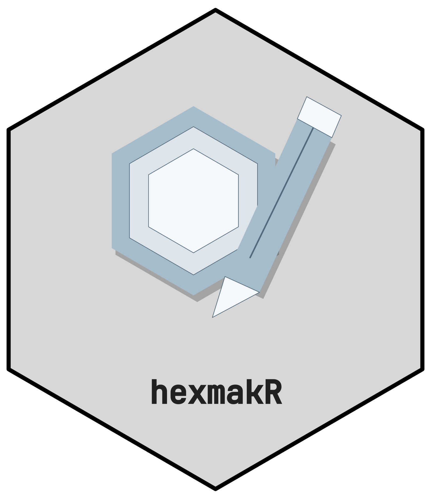

Overview
hexmakR creates editable logos for R packages and projects. The default Designer starts a new logo with your name and a blank frame. Choose a hexagon, pentagon or square, then add shapes, uploaded artwork or a generic icon and edit each part. Names stay inside the frame and the exterior is transparent.
The secondary CTTIR Gallery contains 45 identities and 1,035 original SVG/PNG/PDF assets. Browse for inspiration, import one selected part or an entire motif into your current logo, or explicitly start from a whole archived design. Browsing the archive does not replace your work.
Click a visible part to select it, then drag it to a new position. Short item names and Frame/Icon/Name groups help organise the composition; custom groups can be renamed, regrouped and moved together. The editor supports individual fills, outlines, positions, sizes, rotation, opacity, visibility and point coordinates, plus duplicate/remove, undo/reset, JSON projects and PNG/SVG/PDF export. All 46 generic icons are available. The classic designer offers 28 themes, led by the nine CTTIR v5 families, plus custom image uploads and font controls.
library(hexmakR)
hexmakr_app() # fresh logo; optional CTTIR Gallery tab
hexmakr_app(package = "phenoscapR") # preselect archive, keep fresh logo
hexmakr_app(workspace = "classic") # original generic sticker designer
project <- logo_design("My project", shape = "pentagon")
project <- hex_add_part(project, "circle", x = .5, y = .6, r = .15)
project <- hex_edit_layer(project, "part_0001", fill = "#45B59A")
hex_export(project, "project.png")
# Reuse archive artwork while keeping the new name, frame and existing parts.
project <- hex_reuse_part(project, "phenoscapR")
hex_save_design(project, "project.json")
hex_export(project, "project.svg")
# An explicit identity still opens that complete editable archive design.
hex_export(hex_design("phenoscapR"), "phenoscapR.svg")See the detailed update plan and v5 library guide.
Standing on the shoulders of hexSticker
The excellent hexSticker package by Guangchuang Yu is the original and most widely used hex sticker generator in the R ecosystem. Available on CRAN, it provides a powerful programmatic API built on ggplot2 that lets you embed any R plot, lattice graphic, ggplot, or image file into a hex sticker — and hundreds of R package stickers have been created with it.
hexmakR is not a replacement for hexSticker — it is a complement. If you want to embed an actual R plot (base, lattice, or ggplot2) into your sticker, hexSticker is the right tool. It excels at code-first, reproducible sticker generation with full control over subplot positioning.
hexmakR fills a different niche. It focuses on:
- Interactive visual design — a Shiny app where you see changes live and export when you’re happy, no code required
- A curated theme library — the nine CTTIR v5 family palettes plus 19 domain-specific color palettes (Statistics, Bioinformatics, Genomics, Pharma, CRAN, Bioconductor, Tidyverse, and more) with one-click dark/light switching
- A built-in icon library — 46 hand-drawn scientific and technical icons across 7 categories, so you don’t need external image files
- Font selection — choose from 14 fonts, including the bundled JetBrains Mono used for v5 names, with bold/italic toggles directly in the UI
- Zero-to-sticker speed — designed for the case where you want a good-looking hex sticker in under a minute without writing any code
We recommend trying both and using whichever fits your workflow. For many users, the best approach is to prototype in hexmakR’s Shiny app and then fine-tune programmatically — with either package.
Installation
# Development version
# install.packages("pak")
pak::pak("cttir/hexmakR")Quick Start
library(hexmakR)
logo <- logo_design("My package")
logo <- hex_add_part(logo, "polygon",
x = c(.35, .65, .5), y = c(.45, .45, .75))
hex_layers(logo)
hex_export(logo, "my-package.svg")logo_design() starts with a frame and name, with no archived motif. Pass motif = "phenoscapR" or another identity only when that artwork is wanted. Use shape = "pentagon" or shape = "square" for project logos.
Shiny App
Enter your name and choose a frame, then select Apply logo settings. Add part creates a circle, rectangle, line or triangle. Select a part, change its properties or points, and choose Apply part edit. Duplicate part and Remove part act on the selection. The CTTIR Gallery tab offers Add selected part to my logo, Add artwork to my logo, and the separate Start from whole design action.
Undo restores the previous edit. Reset to starting design restores the current session baseline: the new logo, the explicitly loaded archive design, or the opened JSON project. New logo starts fresh and can also be undone. Downloads use the applied design; pending form changes must be applied first. Save project preserves editable parts and R recipe reproduces them.
Use Add an image or vector drawing for PNG/JPEG figures or SVG artwork. PNG/JPEG remains one movable, scalable and rotatable image with editable opacity. Supported SVG shapes become individual vector parts. Both are embedded in the project, so reopening needs no original upload file.
project <- hex_import_art(logo_design("My project"), "figure.svg")
project <- hex_label_layer(project, "part_0001", "Central cell")
project <- hex_edit_layer(project, "part_0001", angle = 25, alpha = .8)
hex_groups(project)Uploads are limited to 10 MiB; projects to 20 MiB. SVG supports solid-colour paths/shapes, transforms and local references. Curves become bounded vector polylines, and SVG/PDF exports keep that vector geometry. Outline text and flatten gradients, masks, filters or intersecting clips before uploading; unsupported features produce an explanatory error. Raster content stays raster inside SVG/PDF exports. The application title is the text hexmakR.
Classic designer comparison
| Feature | hexSticker | hexmakR |
|---|---|---|
| Embed R plots (base/lattice/ggplot2) | ✅ | — |
| Interactive Shiny designer | — | ✅ |
| Built-in icon library (46 icons) | — | ✅ |
| Curated theme presets (28 themes) | — | ✅ |
| Dark/light mode toggle | — | ✅ |
| Custom image upload | ✅ | ✅ |
| Font selection UI | — | ✅ |
| Google Fonts support | ✅ | — |
| Programmatic API | ✅ | ✅ |
| Returns ggplot object | ✅ | ✅ |
| Installation | CRAN | GitHub development version |
Available Themes
The nine CTTIR v5 families come first and are the house standard. Their colours are derived from the v5 design tokens by the same engine as hex_design(), so a classic sticker uses the tile face, rim, ink and muted text of the v5 artwork. Use hex_design() for complete v5 artwork with motifs and outlined names.
hex_sticker("mypkg", icon = "microscope", theme = "spatial",
font_family = "jetbrains_mono")| Key | Label |
|---|---|
spectral |
Spectral imaging |
spatial |
Spatial biology |
omics |
Molecular data |
clinical |
Clinical science |
methods |
Learning & inference |
simulation |
Systems & simulation |
evidence |
Evidence & discovery |
platform |
Research infrastructure |
brand |
Science, connected |
The 19 generic themes follow:
| Key | Label |
|---|---|
stats |
Statistics |
viz |
Visualization |
bio |
Bioinformatics |
medical |
Medical/Clinical |
tech |
Tech/Computing |
earth |
Earth/Nature |
cran |
CRAN |
bioc |
Bioconductor |
tidy |
Tidyverse |
genomics |
Genomics |
proteo |
Proteomics |
pharma |
Pharma |
ocean |
Ocean |
midnight |
Midnight |
cyber |
Cyber |
neon |
Neon |
sunset |
Sunset |
viridis |
Viridis |
plasma |
Plasma |
Each theme has both dark and light variants.
Available Icons
| Category | Count | Icons |
|---|---|---|
science |
5 | atom, flask, microscope, molecule, magnet |
biology |
6 | dna, cell, brain, leaf, bacteria, tree |
stats |
8 | bar_chart, scatter, line_chart, bell_curve, pie, sigma, boxplot, network |
medical |
6 | stethoscope, heart, pulse, pill, cross, syringe |
tech |
6 | terminal, brackets, gear, database, hash, rlogo |
shapes |
7 | star, shield, diamond, hexagon, infinity, arrow_up, circle |
fun |
8 | rocket, lightning, fire, sparkle, crown, coffee, music, gamepad |
Contributing
Contributions are welcome! Please open an issue first to discuss major changes at github.com/cttir/hexmakR/issues.
Code of Conduct
Please note that the hexmakR project is released with a Contributor Code of Conduct. By contributing to this project, you agree to abide by its terms.
Acknowledgements
hexmakR was inspired by the pioneering work of the hexSticker package. We are grateful to Guangchuang Yu and all contributors for establishing hex stickers as a staple of R package identity.
Citation
If you use this software, please cite it as:
Heller, R. (2026). hexmakR: Interactive hex sticker generator for R packages (Version 0.1.0) [Computer software]. Zenodo. https://doi.org/10.5281/zenodo.21889938
Use of LLM tools
Where applicable, LLM tools were used for narrowly defined, non-authorial tasks: copyediting, prose refinement, Markdown/LaTeX formatting, boilerplate scaffolding (such as CI configurations and build scripts), and code refactoring. Tools included Chat AI, the KISSKI (GWDG) service, and self-hosted Mistral Small (24B, Apache-2.0) served through a local vLLM architecture on an Ubuntu Linux workstation with Intel processors and NVIDIA GPUs. The self-hosted model ran locally, with no data sent to third parties.
All scientific claims, methodological choices, analyses, interpretations and conclusions remain the authors’ own. Where applicable, LLM-generated material must be reviewed and revised before inclusion, and references must be verified against their DOI, arXiv ID or ISBN.
Local software setup: vLLM with Python/PyTorch, plus R and RStudio.
Package branding
The package uses the CTTIR Coder Edition v5 v3.1 identity. Editable R geometry, fonts, and a reproduction command are in tools/branding.